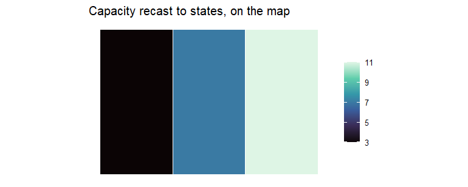
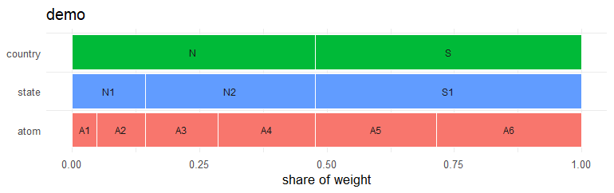

Nested regions and spatial hierarchies for optimization and simulation models.
geoscales is the spatial-domain package of the optimal2050 modeling stack and the spatial companion to timescales.
This is a multi-language project. The R package is the current focus (Phase 1); a C++ core (Phase 2) and a Python port (Phase 3) are planned.
Quick demo
A Geoscale is a nested spatial partition: a flat table of weighted leaf regions (“atoms”) plus the ordered geoframes that group them. Aggregation and disaggregation are ONE verb — direction comes from the geoframe ranks, and totals are preserved either way:
library(geoscales)
gs <- geoscale_from_leaftable(
data.frame(
country = c("N", "N", "N", "N", "S", "S"),
state = c("N1", "N1", "N2", "N2", "S1", "S1"),
atom = paste0("A", 1:6),
km2 = c(100, 200, 300, 400, 500, 600)
),
geoframes = c("country", "state", "atom"),
name = "demo"
)
cap <- data.frame(atom = paste0("A", 1:6), capacity = 1:6)
cap |> recast_geoscale(gs, from = "atom", to = "country", rule = "sum")
#> country capacity
#> 1 N 10
#> 2 S 11
# ... and back down, split by area
data.frame(country = c("N", "S"), capacity = c(10, 20)) |>
recast_geoscale(gs, from = "country", to = "state",
rule = "sum", weight = "km2")
#> state capacity
#> 1 N1 3
#> 2 N2 7
#> 3 S1 20With geometry attached, values land on a map as one ggplot2 layer (geom_geoscale()); without any geometry, plot() draws the hierarchy itself:
library(ggplot2)
sq <- function(x, y) sf::st_polygon(list(cbind(
c(x, x + 1, x + 1, x, x), c(y, y, y + 1, y + 1, y))))
gs <- attach_geometry_geoscale(gs, sf::st_sfc(
sq(0, 1), sq(0, 0), sq(1, 1), sq(1, 0), sq(2, 1), sq(2, 0)))
cap |>
recast_geoscale(gs, from = "atom", to = "state", rule = "sum") |>
ggplot() +
geom_geoscale(gs = gs, z = "capacity", geoframe = "state",
colour = "white", linewidth = 0.6) +
scale_fill_viridis_c(option = "G") +
labs(title = "Capacity recast to states, on the map", fill = NULL) +
theme_geoscale()
plot(gs)
See vignette("geoscales") for the 5-minute tour, and the visualization article for choropleths, recasts seen on the map, and a real-map tour of Iceland with data attached.
Two things about space that the time domain does not have to deal with, and which shape the whole design:
-
Geoframes need not nest. In India’s IDEEA region table, the
reg32codeAPYmerges Andhra Pradesh with part of Puducherry, soreg35does not nest insidereg32. Every conversion therefore routes through the atom layer, and cross-cutting geoframes work without special handling. -
Region codes are not unique across geoframes. 46 of 62 IDEEA codes appear at more than one geoframe (
ANat seven). Sogeoframeis a required argument everywhere — nothing is inferred from a bare code.
No bundled maps
geoscales ships integration code, not data: no boundaries are bundled, and no map source is selected for you. Providers (Natural Earth via ne_geoscale(), or your own via register_geo_provider()) pass a point of view through and record it in @meta.
Documentation
- Project site — entry point for all language flavours
- R reference and articles
Status
🚧 In development — pre-1.0, APIs may still change between minor versions. Feedback and issues are welcome.
Installation
# From GitHub
remotes::install_github("optimal2050/geoscales")Or via r-universe:
install.packages("geoscales", repos = "https://optimal2050.r-universe.dev")Repository layout
geoscales/
├── DESCRIPTION, NAMESPACE, R/, man/, tests/, vignettes/ # R package (root)
├── inst/include/geoscales/ # C++ headers (Phase 2)
├── cpp/ # standalone C++ core (Phase 2)
├── python/ # Python package (Phase 3)
├── docs/ # unified Quarto site
├── specs/ # cross-language golden tests
└── .github/workflows/ # CILicense
Apache-2.0. See LICENSE.